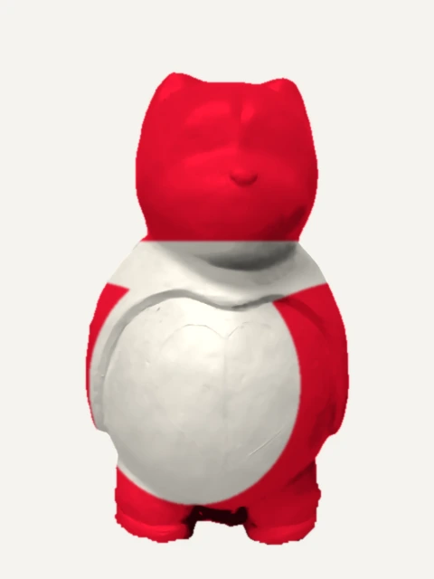
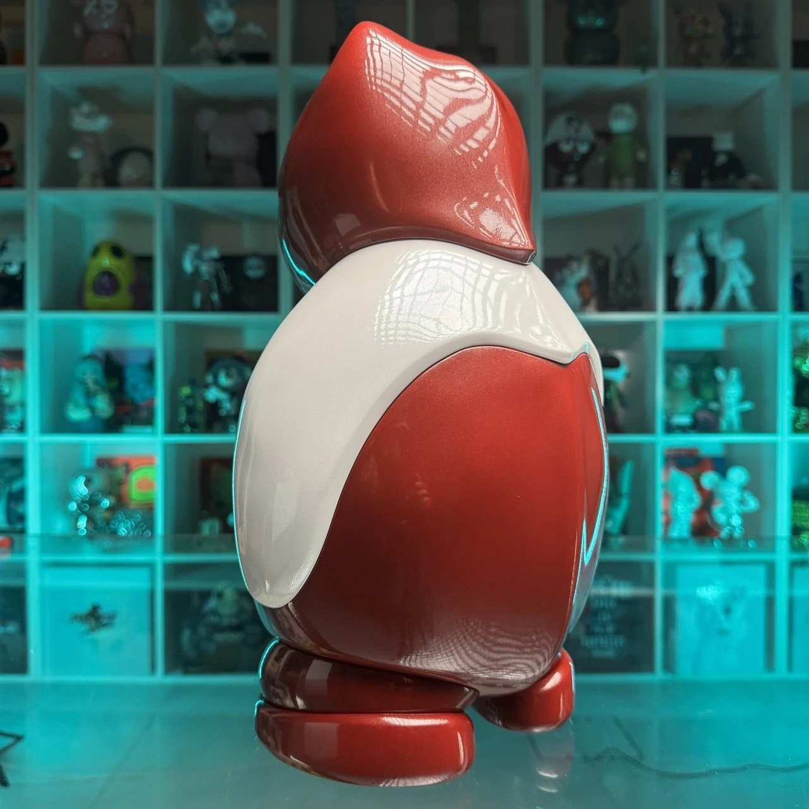
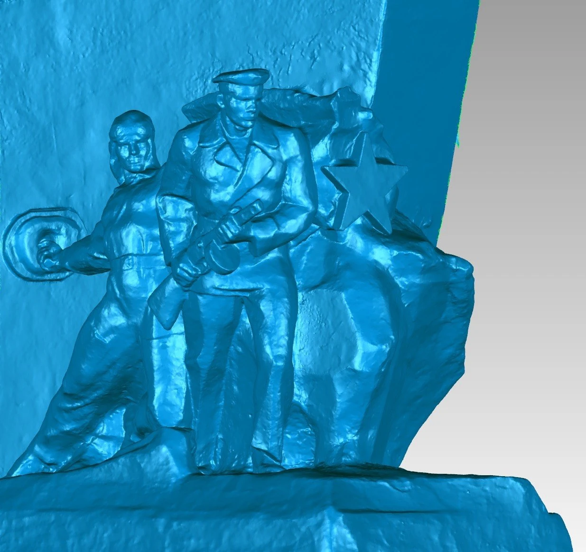

Понимаем задачу
Обсуждаем идею, контекст, масштаб, сроки и ориентир по бюджету.
Воплощаем смелые идеи в дизайне и архитектуре интерьеров и экстерьеров, скульптуре и бытовом дизайне.

Стрелки влево и вправо — повернуть медведя. Пробел или Enter — включить или приостановить вращение.
Проекты этого направления пока не добавлены.
Обсудить идеюОткройте проект, чтобы рассмотреть детали, разные ракурсы и процесс создания.
Подключаемся на этапе замысла или работаем с готовой концепцией. Подбираем материал, технологию и способ воплощения под задачу.
Пространственные решения для интерьеров и экстерьеров: от общей концепции до деталей среды.
Обсудить идеюАвторские формы, объёмные персонажи и выразительные объекты для выставок, общественных и частных пространств.
Обсудить идеюПредметы для повседневной жизни и интерьера. Продумываем форму, назначение и характер каждой вещи.
Обсудить идеюСувениры, призы и награды с индивидуальным образом. Работаем с формой и деталями под задачу.
Обсудить идеюОбсуждаем идею, контекст, масштаб, сроки и ориентир по бюджету.
Предлагаем направление, эскизы и материалы. Согласуем, каким будет объект.
Создаём 3D-модель и при необходимости прототип. Уточняем детали до изготовления.
Изготавливаем, обрабатываем и готовим объект к передаче или установке.
Нас интересуют вещи, которые невозможно не заметить.
Творческое объединение «ТРИФОТИ» соединяет художественный взгляд и инженерное мышление. Мы ищем характер в форме и способ превратить её в настоящий предмет.
Работаем вместе с брендами, архитекторами, дизайнерами и людьми, у которых есть идея, выходящая за рамки готового каталога.
Давайте познакомимсяДизайн

Событие ·
Награды для Премии Председателя и Сопредседателя СТД РФ, вручённые на церемонии с Владимиром Машковым. Проект команды Технопарка РГСУ из портфолио STEP_3D.
Посмотреть проект
Блог · История проекта
Эскиз, исходная форма и цветовые исполнения медведя. В галерее можно сравнить силуэт и детали скульптуры в белом и красном цвете.
Посмотреть проект
Блог · История проекта
Сохранившийся объект, детали утраты и ракурсы скульптурной модели. В кейсе собраны фотографии мемориальной композиции и её пластической проработки.
Посмотреть проектФёдор Паршин / скульптор
Разговоры о скульптуре, репортажи и публикации о работах Фёдора Паршина. Подборка проверенных источников, а не полный список всех публикаций.
Вечерняя Москва ·
Разговор с Фёдором Паршиным о портретной скульптуре, ялтинских памятниках и работе в интерьерах.
Читать у источникаВечерняя Москва ·
Геннадий и Фёдор Паршины рассказывают о профессии, совместной работе и поиске скульптурного образа.
Читать у источникаРадио ЗВЕЗДА / Звезда Аналитика ·
Беседа с Фёдором Паршиным о монументальной скульптуре, мемориальных работах и творческом сотрудничестве с отцом.
Видео на сайте издания47канал / Ленинградская областная телекомпания ·
Репортаж об открытии мемориала с прямой речью Фёдора Паршина о замысле скульптурной композиции.
Видео на сайте изданияФестиваль «Видеть и слышать» · 2025
Произведение «Преподобный Сергий Радонежский» и раздел о художнике в каталоге II фестиваля современного церковного искусства.
Читать у источникаОдинцовский информационный центр ·
Елизавета Молчанова рассказывает о создании Доброториума и роли Фёдора Паршина в жизни центра.
Читать у источникаИнтервью, статьи, каталоги и видео. Ссылки открываются в новой вкладке на сайтах изданий или в электронной копии выпуска; тексты и медиа остаются у источников.
Показано: 21 из 21.
Севастопольская газета
Сообщение о рассмотрении проекта на архитектурно-художественном совете. На дату статьи место установки ещё обсуждалось.
Речь о проекте воссоздания, а не о завершённой установке.
Вести Севастополь / ГТРК Севастополь
Материал о согласовании проекта воссоздания памятника. Фёдор Паршин назван скульптором будущей фигуры.
Ссылка ведёт на страницу издания. Доступность внешнего видеоплеера может отличаться.
Одинцовский информационный центр
Елизавета Молчанова рассказывает о создании Доброториума и роли Фёдора Паршина в жизни центра.
Это интервью с Елизаветой Молчановой, не с Фёдором Паршиным.
Доброториум
Рассказ о юбилейном фестивале Доброториума и его открытии руководителем центра Фёдором Паршиным.
Радио ЗВЕЗДА / Звезда Аналитика
Беседа с Фёдором Паршиным о монументальной скульптуре, мемориальных работах и творческом сотрудничестве с отцом.
Фестиваль «Видеть и слышать»
Произведение «Преподобный Сергий Радонежский» и раздел о художнике в каталоге II фестиваля современного церковного искусства.
Каталог 2025 года, с. 298–299. Ссылка ведёт на страницу фестиваля.
Российское военно-историческое общество
Сообщение об открытии воссозданного памятника солдату Владимирского пехотного полка и работе скульптора.
Фестиваль «Видеть и слышать»
Биографическая справка и рельеф Данилова монастыря в каталоге выставки «Монументальное искусство в церкви».
Каталог 2023 года, с. 208–209. Ссылка ведёт на страницу выставки.
Таткультресурсцентр
В сообщении о фестивале изобразительного искусства Фёдор Паршин назван председателем экспертной комиссии.
ПУМ24
Материал о финале конкурса, в котором участвовал Фёдор Паршин. Победителем стал другой проект.
Доброториум
Публикация Доброториума о скульптуре, созданной Фёдором Паршиным на основе детского рисунка.
Вечерняя Москва
Геннадий и Фёдор Паршины рассказывают о профессии, совместной работе и поиске скульптурного образа.
«Морская политика России»
Репортаж из мастерской о работе над проектом воссоздания памятника. Это рассказ о замысле, не об установленном монументе.
№26, октябрь 2019, с. 72–75.
47канал / Ленинградская областная телекомпания
Репортаж об открытии мемориала с прямой речью Фёдора Паршина о замысле скульптурной композиции.
Свято-Троицкая Сергиева лавра
Сообщение об открытии памятника Сергию Радонежскому и Димитрию Донскому с указанием автора композиции.
«Встреча» / Московская духовная академия
Скульптор объясняет, как выбирал разные образы для четырёх памятников Сергию Радонежскому.
Журнал «Встреча», №1(33), с. 62–63. Электронная копия: Азбука веры.
Объединение московских скульпторов
Публикация ялтинского памятника Ханжонкову с атрибуцией Фёдору Паршину в юбилейном сборнике объединения скульпторов.
Сборник «1992–2012», с. 278. Большой PDF, около 53 МБ.
Культура
Репортаж о телекинофоруме включает рассказ об открытии памятника Ханжонкову и комментарий Фёдора Паршина.
Газета «Культура», 15 сентября 2011, с. 12.
Вечерняя Москва
Разговор с Фёдором Паршиным о портретной скульптуре, ялтинских памятниках и работе в интерьерах.
«Памятники в Петрозаводске» / Константин Кулаков
Авторская карточка скульптора и сведения о мемориале в Петрозаводске в фотокаталоге Константина Кулакова.
Доброториум
Страница Фёдора Геннадьевича Паршина на сайте Доброториума: образование, преподавание и работа в центре.
Расскажите, что вы задумали.
Даже если пока это только «хочу что-то такое».